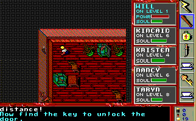

| Nightmare on the Elm street (Кошмар на улице Вязов) |
|---|
Этот текст написан в первой половине 90-х годов. Недавно я нашел его в своих старых архивах, почистил, дополнил, снабдил картинками и представляю вам. Поностальгируем? J
Это одна из моих любимых в прошлом игрушек. Есть в ней какое-то наивное очарование, азарт... ну и, конечно, главное, чем она привлекает - опьяняющий аромат рубежа 80-90-х годов. Позже я видел немало игрушек примерно такой же тематики (например, Diablo), и более красивых, и более сложных, и более увлекательных, но до сих пор считаю непревзойденным шедевром жанра именно ее.
Сюжет построен по мотивам многосерийной голливудской "саги" про борьбу с Фредди Крюгером - обугленным демоном, обитающим в ночных кошмарах. Для понимания сути и смысла игрушки, конечно, смотреть фильм не обязательно, но очень желательно. Только тогда становится понятно, кто такая Нэнси, кто такая Кристин, кто такой Кинкейд, и почему печальной жутью звучат незамысловатые куплеты:
Ну ладно, поскольку этот старый "ужастик" сейчас показывают нечасто, вот вам сюжетец: давным-давно в одном маленьком американском городке располагалась психбольница для свихнувшихся маньяков... чувствуете завязочку?... и в ней работала медсестрой юная девушка по имени Аманда Крюгер. Однажды маньяки набросились на нее, связали и спрятали в своей камере, да так, что в течение нескольких месяцев ни полиция, ни врачи, ни санитары, не могли ее найти. Хе-хе... "А под кроватью смотрели?". J Все это время маньяки девушку мучили и накачивали своей вонючей спермой... короче, через 9 месяцев у Аманды родился ребенок по имени Фредди, который унаследовал одновременно все пороки обитателей этой страшной психушки. Ну, потом все раскрылось, маньяков поругали, Аманду освободили, и она стала в одиночестве воспитывать свое ненаглядное "чадушко". А "чадушко" с младенческих лет пило, курило, ругалось матом, мучило кошек, ширялось наркотой, и так далее и тому подобное. А когда оно выросло, то принялось полосовать жителей городка перчаткой со вшитыми в нее лезвиями. Чаша терпения окружающих была переполнена, жители городка похватали ружья, ножики, лопаты, бензопилы и прочие предметы домашнего обихода, схватили Фредди, заперли его в деревянном доме (вместе с бедной его мамашей) и сожгли заживо. Лучше бы они этого не делали, потому что спустя много лет Фредди стал являться к детям и подросткам городка в ночных кошмарах, и в извращенной форме убивать их.
Короче, персонаж по имени Джой прилег вздремнуть... и оказался в лапах Крюгера, который запер его в бесконечных лабиринтах своего заколдованного дома. Друзья решили спасти его, взялись за руки и тоже уснули. J И оказались разбросаны по разным закоулкам того же дома.
Вы можете играть за одного из следующих персонажей:
Решайте побыстрей - пока вы задумчиво ковыряете в носу, Фредди поочередно хватает одного персонажа за другим. Я предпочитаю Кинкейда. Его незамысловатое умение пригождается только на первом и на последнем уровнях, зато у него уйма здоровья и душевных сил.
Итак, это только завязка сюжета. "Сказка будет впереди".
Вероятно, очень многих отвратил от этой игрушки начальный эпизод. J Исключительно примитивная графика, абсолютно тупая задача: бегая крохотной козявкой по улицам ночного города, увертываться от полосатого таракана (Фредди) и искать дом с мигающими окнами. IMHO, это самый главный просчет создателей игрушки - потыкав пару минут клавишки, юзер разочаровывался и забрасывал игрушку. И зря. Потому что это всего лишь было тестом на умение владеть клавиатурой. А самое главное, и красивое, и увлекательное, начиналось позже.
Маленький совет: если хотите побыстрей развязаться с этим этапом, то барражируйте в левом верхнем секторе города - дом с мигающими окнами через некоторое время появляется именно там. Скользите глазами только по коричневым домам. После того, как вы войдете в дом, вам явится Аманда Крюгер, пожалеет Джоя, подбодрит вас и пообещает всяческую моральную поддержу. А чего еще ждать от бестелесной покойницы?
Управление - типичное для игр такого класса и времени создания:
Изредка вам придется отвечать на вопросы, выбирая стрелками YES или NO и нажимая Enter. Выйти в меню, чтобы сохраниться, восстановиться или выйти из игры, можно при помощи ESC. Было еще что-то, чего я уже не помню, но перечисленного для игры вполне достаточно.
Успешно проникнув дом Фредди, вы оказываетесь на нулевом этаже: вокруг коридоры, оклеенные рваными обоями, и деревянные полы. Но так будет не всегда. На других этажах вы посетите сады с клумбами и кустарниковыми лабиринтами; подвалы со стенками, покрытыми слизью; огромные темные цеха с протянутыми от стены к стене металлическими мостиками; гигантские холодильники с сугробами и т.п.
Самое главное и интересное в этом доме это то, что он обладает глумливым характером самого Фредди Крюгера. В доме полным-полно раздвигающихся и сдвигающихся стен; невидимых ловушек, наступив на которые, вы телепортируетесь в другую точку дома; коридоров, меняющих направление, и тому подобных "шуточек". Некоторые "шуточки" управляются при помощи рычагов, торчащих из стены (переключаются пробелом). Есть этажи, где рычаги располагаются в разных районах, и вы не выберетесь с этих этажей, пока не убегаетесь до посинения и не составите правильную комбинацию включений-отключений. Учите двоичную арифметику! J Часть дверей открываются ключами, которые вы заблаговременно нашли в другом районе дома. Часть "шуточек" невозможно победить, пока вы не прочитаете текстовую подсказку, появляющуюся в нижней части экрана, например: "иди на север" (это означает, что необходимо направляться в пустую нишу, расположенную в верхней части экрана) или "оставь подарок на моей грибной постели" (это означает, что необходимо положить на пол в указанном месте какой-нибудь ненужный вам предмет). Кроме того, на одном из верхних уровней вам придется догадаться самостоятельно, что необходимо расположить бутылки со святой водой в форме креста на предназначенных для этого площадках. В любом случае не отчаивайтесь и помните, что все уровни проходимы и все загадки решаемы!
Главный совет: как можно быстрее завладейте картой и почаще поглядывайте на нее, т.к. она непрерывно отражает все изменения, проходящие в топологии коридоров. И еще: если вы обнаружили, что в структуре дома что-то изменилось (например, появился новый коридор), обязательно попытайтесь пройти в него, как бы опасно он не выглядел. Напрасно такие подарки не делаются!
Дом наполнен слугами Фредди Крюгера - скелетами, инвалидными колясками, привидениями, зелеными головастиками и тому подобной нечистью. Все они кусаются и могут закусать до смерти, фатально уменьшив ваше здоровье и душу. После гибели из некоторых монстриков выпадают золотые монеты. Еще в доме встречаются "коврики" с торчащими гвоздями, причем они то втягиваются в пол (тогда по ним можно ходить), то высовываются остриями наружу (тогда хождение по ним вредно для здоровья). Попадаются горящие участки пола, которые желательно обходить подальше.
Совет: почаще сохраняйтесь.
В доме повсюду разбросаны разнообразные предметы (артефакты), которые можно взять и каким-либо образом использовать. В кармане умещаются всего 7 предметов, один из них является текущим (т.е. если вы нажмете на пробел, то используется именно он).
Сундук. Содержит какой-нибудь случайный предмет. Иногда можно вытащить из него лечилку, а иногда - нарваться на взрыв гранаты. Рекомендую перед сундуком сохраниться.
Карта. Обязательна для прохождения игрушки. Можно купить в магазине за золотые монеты или найти лежащей на полу.
Ключ. Позволяет открывать двери, после использования исчезает.
Оружие. Самое простое, надежное и универсальное средство ближнего боя - бейсбольная бита. Самое эффективное - "грелка" со святой водой, но после использования она пропадает. Кирка, кинжал, бензопила, топор - эффективны против отдельных разновидностей монстриков и неэффективны против других, поэтому - на любителя. Ружье, револьвер, бластер - позволяют отстреливать монстров издалека, но не всегда удается хорошо прицелиться, да и боезапас быстро расходуется. Граната пропадает после использования, а кидать ее надо издалека, чтобы не пораниться осколками.
Лечилки. Кофейная чашка и ампула с лекарством. Второе средство эффективней примерно в два раза, поэтому если есть альтернатива - кладите в карман именно ампулу.
Монеты, патроны, энергоячейки. Это все расходуемые ресурсы, которые не занимают место в кармане, поэтому если есть возможность, их надо брать.
"Плохие" предметы. Магниты вытягивают у вас из кармана полезные предметы. Перчатка потихоньку кусает вас. Были еще какие-то гадкие штучки, сейчас уже не помню.
"Непонятные" предметы. На старших уровнях попадаются какие-то четки, святые кресты и прочие артефакты невыясненного назначения. Возможно, они очень полезны (например, потихоньку восстанавливают здоровье), но я их не использовал и не знаю, зачем они нужны.
Как вы могли понять, эта игра есть смесь типичного экшена с многочисленными логическими загадками. Игра достаточно трудная: некоторые отрезки проходятся не с первого, не со второго, и даже не с пятого раза (например, уровни с висячими над темной пустотой мостиками, истыканными гвоздями); некоторые загадки решаются только перебором всевозможных вариантов расположения ключей, предметов и направлений движения. Внимательно следите за подсказками, появляющимися в нижней части экрана.
На втором уровне есть коридор, в котором гаснет свет и перед вами появляется сам Фредди Крюгер, который вас легко зацарапывает. Но это не конец игрушки, а просто напоминание: почаще сохраняйтесь. J
После второго уровня появится Аманда и спросит у вас пароль. Сохранитесь перед этим, а пароль легко подбирается за пару-тройку попыток.
В конце игры вас ожидает сражение с самим Фредди Крюгером (в виде огромного полосатого червяка) - запасайтесь здоровьем и тренируйтесь (кстати, сохраняться на последнем уровне запрещено).
Надеюсь, что пользуясь этими советами, вы спасете всех своих товарищей и отправите противного Фредди Крюгера в адское пекло. Удачи! J